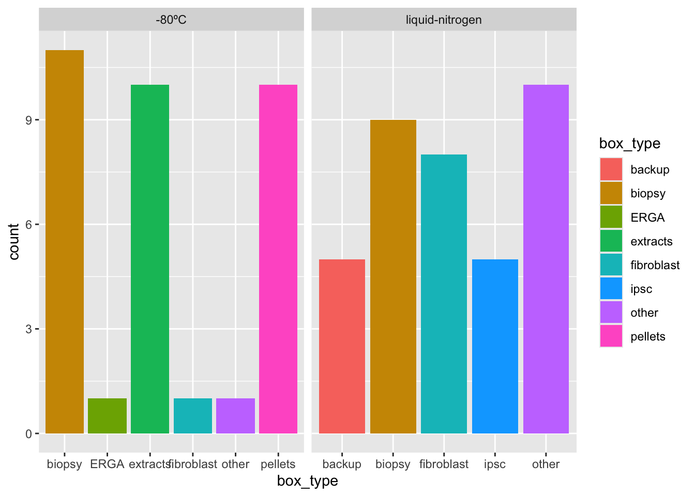
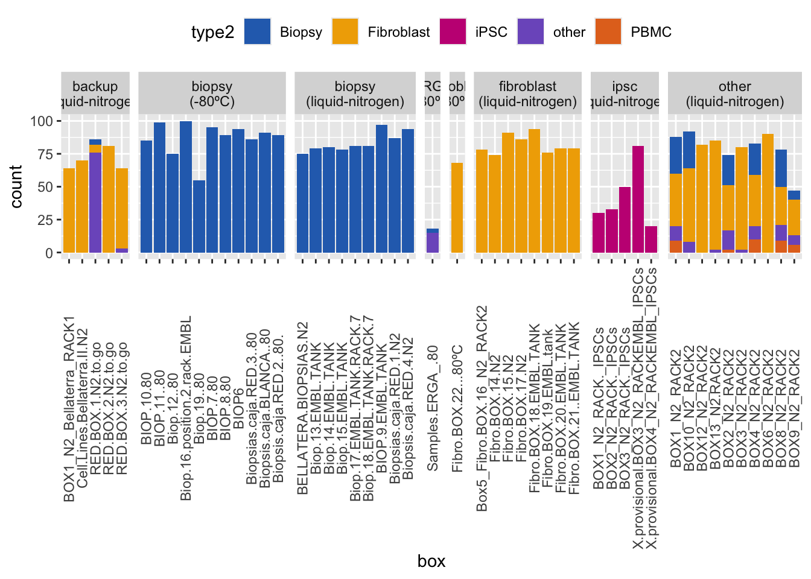
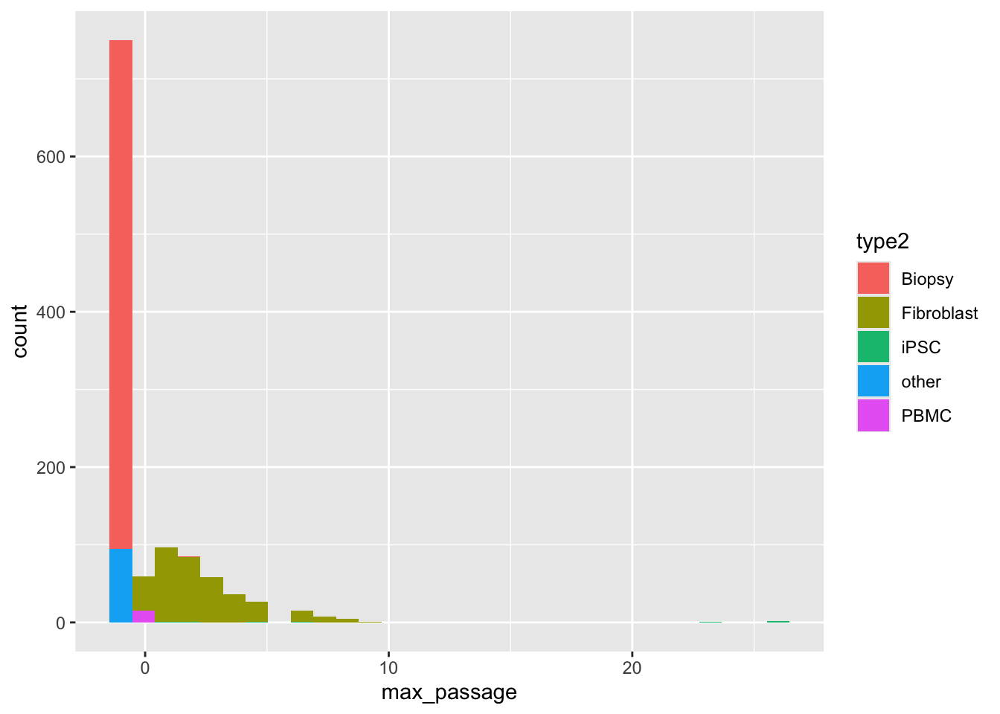
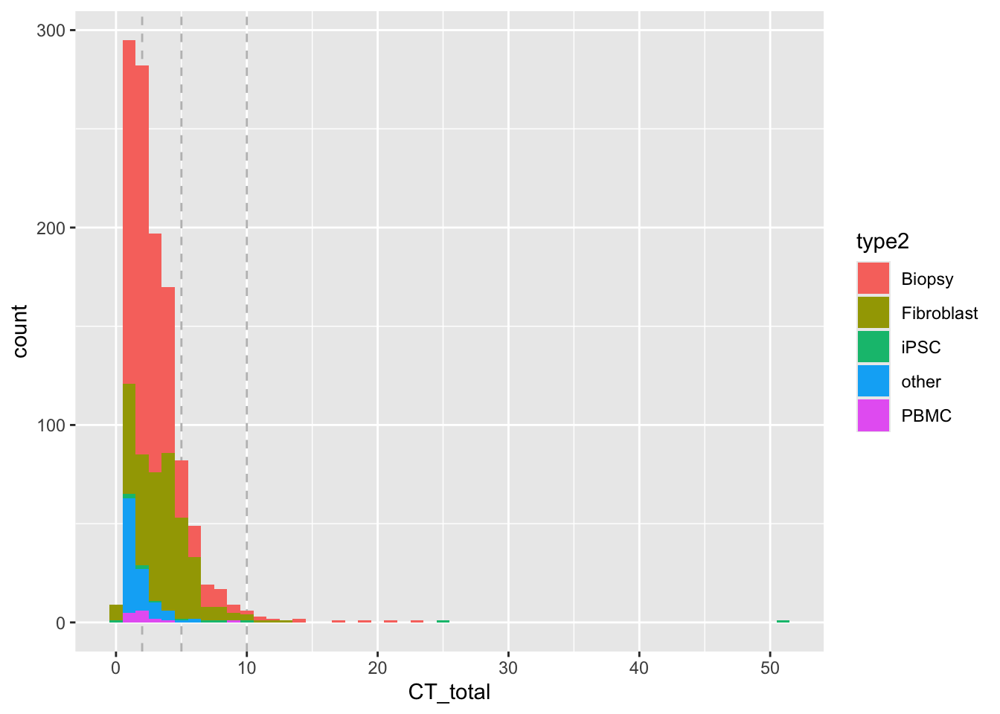
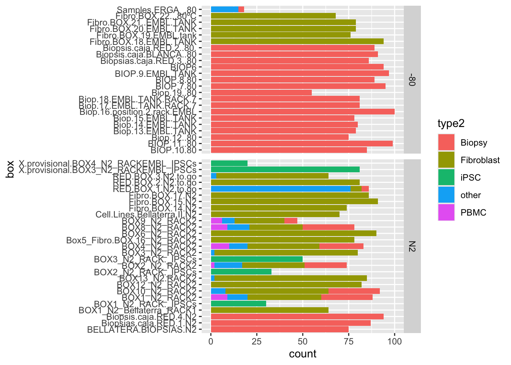
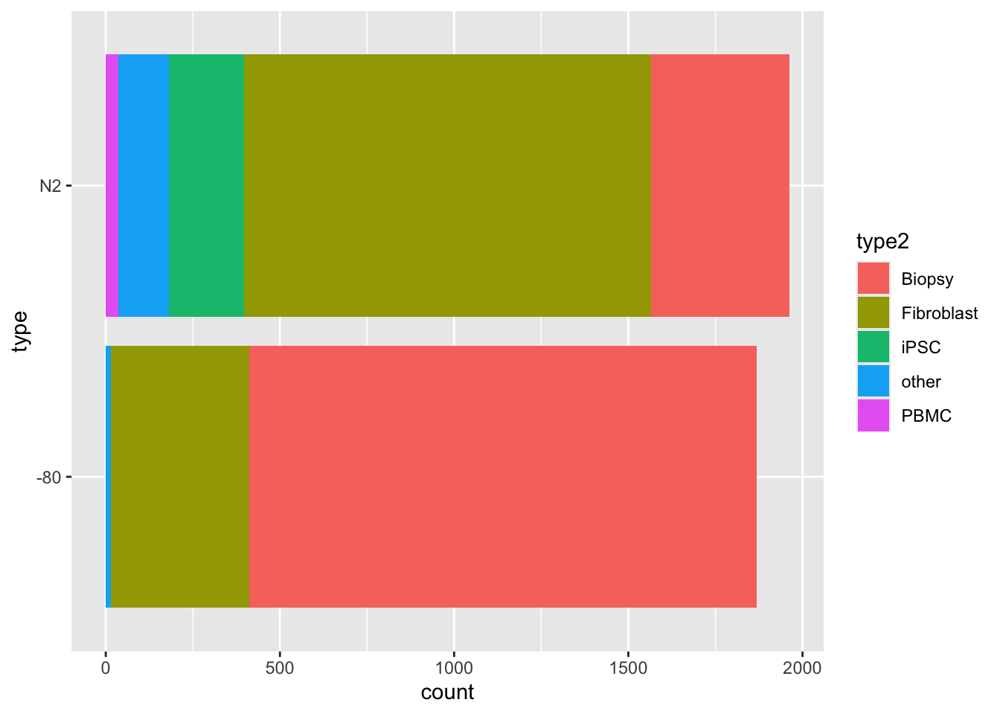
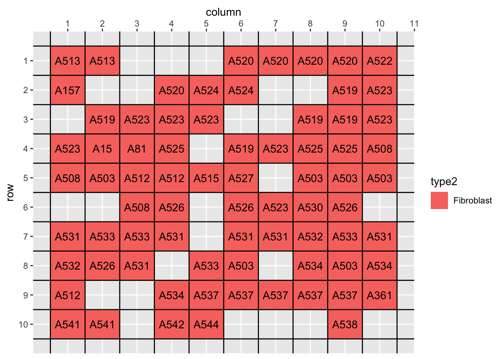
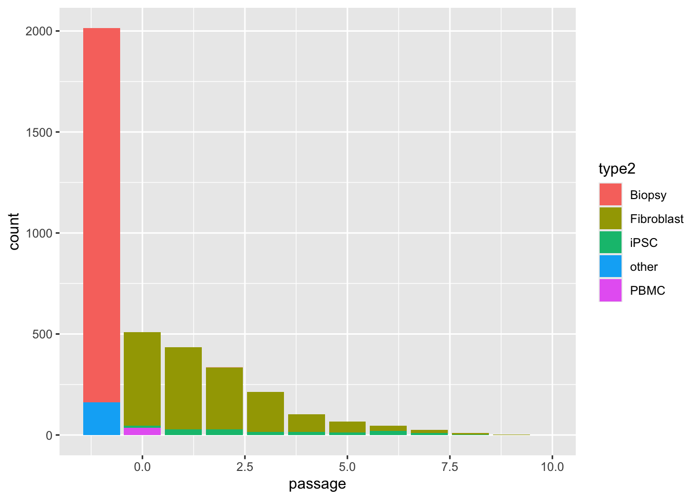
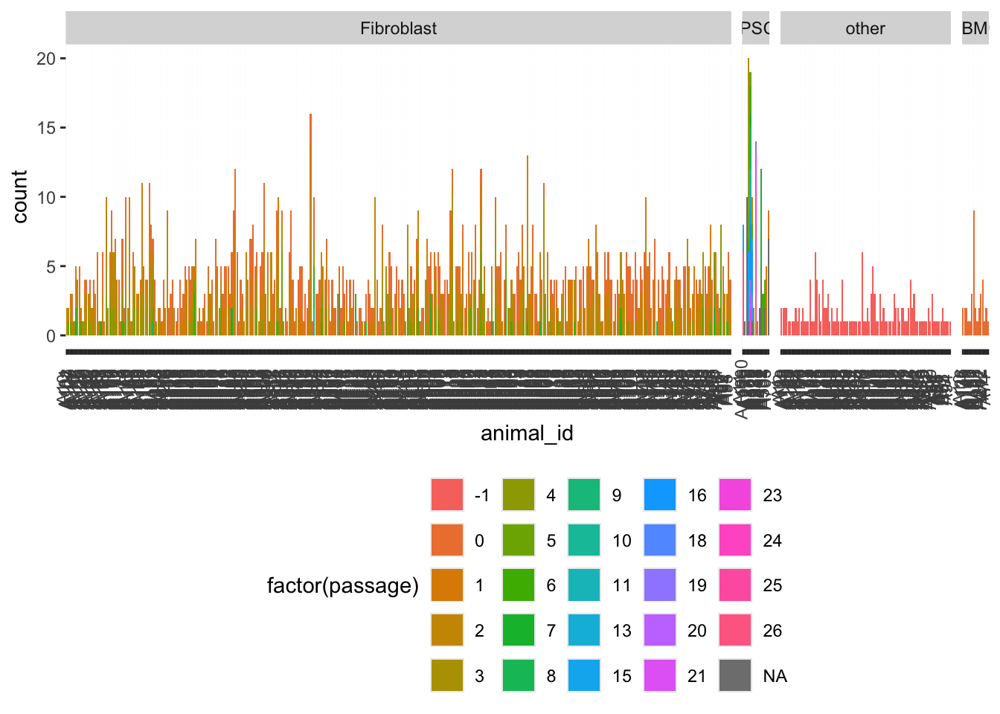

Last updated: 2026-07-09
Checks: 7 0
Knit directory: 1.Species_selection/
This reproducible R Markdown analysis was created with workflowr (version 1.7.2). The Checks tab describes the reproducibility checks that were applied when the results were created. The Past versions tab lists the development history.
Great! Since the R Markdown file has been committed to the Git repository, you know the exact version of the code that produced these results.
Great job! The global environment was empty. Objects defined in the global environment can affect the analysis in your R Markdown file in unknown ways. For reproduciblity it’s best to always run the code in an empty environment.
The command set.seed(20221125) was run prior to running
the code in the R Markdown file. Setting a seed ensures that any results
that rely on randomness, e.g. subsampling or permutations, are
reproducible.
Great job! Recording the operating system, R version, and package versions is critical for reproducibility.
Nice! There were no cached chunks for this analysis, so you can be confident that you successfully produced the results during this run.
Great job! Using relative paths to the files within your workflowr project makes it easier to run your code on other machines.
Great! You are using Git for version control. Tracking code development and connecting the code version to the results is critical for reproducibility.
The results in this page were generated with repository version bc97d32. See the Past versions tab to see a history of the changes made to the R Markdown and HTML files.
Note that you need to be careful to ensure that all relevant files for
the analysis have been committed to Git prior to generating the results
(you can use wflow_publish or
wflow_git_commit). workflowr only checks the R Markdown
file, but you know if there are other scripts or data files that it
depends on. Below is the status of the Git repository when the results
were generated:
Ignored files:
Ignored: .DS_Store
Ignored: .RData
Ignored: .Rhistory
Ignored: .Rproj.user/
Ignored: Cryozoo_clean.gsheet
Ignored: Sample_selection_ongoing.gsheet
Ignored: all_species_selection.gsheet
Ignored: analysis/Update_Sample_table.nb.html
Ignored: analysis/goat_cache/
Ignored: analysis/update_Cell_culture.nb.html
Ignored: analysis/update_Cryostock.nb.html
Ignored: analysis/update_Extractions.nb.html
Ignored: analysis/update_Sequencing.nb.html
Ignored: selected_species_assays_Fixed_LK.gsheet
Untracked files:
Untracked: .Rprofile
Untracked: .gitattributes
Untracked: Cryozoo_project.Rproj
Untracked: README.md
Untracked: _workflowr.yml
Untracked: analysis/Clean_CryoZoo_Lists.Rmd
Untracked: analysis/README.md
Untracked: analysis/archive/
Untracked: analysis/plot_trees_simple.R
Untracked: archive/
Untracked: code/
Untracked: data/
Untracked: output/
Untracked: selected_species.csv
Untracked: selected_species_short.csv
Untracked: selection_best_genomes.csv
Note that any generated files, e.g. HTML, png, CSS, etc., are not included in this status report because it is ok for generated content to have uncommitted changes.
These are the previous versions of the repository in which changes were
made to the R Markdown (analysis/update_Cryostock.Rmd) and
HTML (docs/update_Cryostock.html) files. If you’ve
configured a remote Git repository (see ?wflow_git_remote),
click on the hyperlinks in the table below to view the files as they
were in that past version.
| File | Version | Author | Date | Message |
|---|---|---|---|---|
| Rmd | bc97d32 | Luca Wange | 2026-07-09 | Publish analysis |
| Rmd | 717f83e | Luca Wange | 2026-07-09 | Host with GitHub. |
| Rmd | a22d48b | Luca Wange | 2026-06-12 | Overhaul analysis scripts and add simple tree plotting script |
Get information on availability of cryotubes from the google sheet
library(googlesheets4)
library(tidyverse)── Attaching core tidyverse packages ──────────────────────── tidyverse 2.0.0 ──
✔ dplyr 1.2.1 ✔ readr 2.2.0
✔ forcats 1.0.1 ✔ stringr 1.6.0
✔ ggplot2 4.0.3 ✔ tibble 3.3.1
✔ lubridate 1.9.5 ✔ tidyr 1.3.2
✔ purrr 1.2.2
── Conflicts ────────────────────────────────────────── tidyverse_conflicts() ──
✖ dplyr::filter() masks stats::filter()
✖ dplyr::lag() masks stats::lag()
ℹ Use the conflicted package (<http://conflicted.r-lib.org/>) to force all conflicts to become errorsread_gsheet_allsheets <- function(filename, skip=0, tibble = FALSE) {
# I prefer straight data.frames
# but if you like tidyverse tibbles (the default with read_excel)
# then just pass tibble = TRUE
sheets <- googlesheets4::sheet_names(filename)[-skip]
x <- lapply(sheets, function(X) googlesheets4::read_sheet(filename, sheet = X))
if(!tibble) x <- lapply(x, as.data.frame)
names(x) <- make.names(sheets)
x
}
path<-here::here()Nitrogen_and_80 <- read_gsheet_allsheets("https://docs.google.com/spreadsheets/d/1KXqtgJlJDcty5FJcYSzXUOvUDLCKLq7S76pwVlMa_-Y/edit?usp=sharing",
skip = c(1))! Using an auto-discovered, cached token. To suppress this message, modify your code or options to clearly consent to
the use of a cached token. See gargle's "Non-interactive auth" vignette for more details: <https://gargle.r-lib.org/articles/non-interactive-auth.html>ℹ The googlesheets4 package is using a cached token for
'lucasesteban.wange@upf.edu'.✔ Reading from "Nitrogen and -80-Current".✔ Range ''Cell Lines Bellaterra II N2''.New names:
✔ Reading from "Nitrogen and -80-Current".
✔ Range ''RED BOX 3 N2 to go''.
New names:
✔ Reading from "Nitrogen and -80-Current".
✔ Range ''BOX1_N2_Bellaterra_RACK1''.
New names:
✔ Reading from "Nitrogen and -80-Current".
✔ Range ''RED BOX 1 N2 to go''.
✖ Request 1 failed [429: RESOURCE_EXHAUSTED].
ℹ Will retry in 2.7s.
⠙ Retry happens in 2s
⠹ Retry happens in 1s
✖ Request 2 failed [429: RESOURCE_EXHAUSTED].
⠹ Retry happens in 1s
ℹ Will retry in 7.2s.
⠹ Retry happens in 1s
⠹ Retry happens in 0s
⠙ Retry happens in 6s
⠹ Retry happens in 3s
✖ Request 3 failed [429: RESOURCE_EXHAUSTED].
⠹ Retry happens in 3s
ℹ Will retry in 22.1s.
⠹ Retry happens in 3s
⠹ Retry happens in 0s
⠙ Retry happens in 23s
⠹ Retry happens in 20s
⠸ Retry happens in 17s
⠼ Retry happens in 14s
⠴ Retry happens in 11s
⠦ Retry happens in 9s
⠧ Retry happens in 6s
⠇ Retry happens in 3s
✔ Request 4 successful!
⠇ Retry happens in 3s
⠇ Retry happens in 0s
New names:
✔ Reading from "Nitrogen and -80-Current".
✔ Range ''RED BOX 2 N2 to go''.
New names:
✔ Reading from "Nitrogen and -80-Current".
✔ Range ''BELLATERA BIOPSIAS N2''.
New names:
✔ Reading from "Nitrogen and -80-Current".
✔ Range ''Biopsias caja RED 1 N2''.
✔ Reading from "Nitrogen and -80-Current".
✔ Range ''Biopsis caja RED 4 N2''.
New names:
✔ Reading from "Nitrogen and -80-Current".
✔ Range ''Biopsias caja RED 3 -80''.
New names:
✔ Reading from "Nitrogen and -80-Current".
✔ Range ''Biopsis caja BLANCA -80''.
New names:
✔ Reading from "Nitrogen and -80-Current".
✔ Range ''Biopsis caja RED 2 -80 ''.
New names:
✔ Reading from "Nitrogen and -80-Current".
✔ Range ''BIOP6''.
New names:
✔ Reading from "Nitrogen and -80-Current".
✔ Range ''BIOP 7-80''.
New names:
✔ Reading from "Nitrogen and -80-Current".
✔ Range ''BIOP 8-80''.
New names:
✔ Reading from "Nitrogen and -80-Current".
✔ Range ''BIOP 9 EMBL TANK''.
New names:
✔ Reading from "Nitrogen and -80-Current".
✔ Range ''BIOP 10-80''.
New names:
✔ Reading from "Nitrogen and -80-Current".
✔ Range ''BIOP 11 -80''.
New names:
✔ Reading from "Nitrogen and -80-Current".
✔ Range ''Biop 12 -80''.
New names:
✔ Reading from "Nitrogen and -80-Current".
✔ Range ''Biop 13 EMBL TANK''.
New names:
✔ Reading from "Nitrogen and -80-Current".
✔ Range ''Biop 14 EMBL TANK''.
New names:
✔ Reading from "Nitrogen and -80-Current".
✔ Range ''Biop 15 EMBL TANK''.
New names:
✔ Reading from "Nitrogen and -80-Current".
✔ Range ''Biop 16 position 2 rack EMBL''.
New names:
✔ Reading from "Nitrogen and -80-Current".
✔ Range ''Biop 17 EMBL TANK RACK 7''.
New names:
✔ Reading from "Nitrogen and -80-Current".
✔ Range ''Biop 18 EMBL TANK RACK 7''.
New names:
✔ Reading from "Nitrogen and -80-Current".
✔ Range ''Biop 19 -80''.
New names:
✔ Reading from "Nitrogen and -80-Current".
✔ Range ''Fibro BOX 18 EMBL TANK''.
New names:
✔ Reading from "Nitrogen and -80-Current".
✔ Range ''Fibro BOX 19 EMBL tank''.
New names:
✔ Reading from "Nitrogen and -80-Current".
✔ Range ''Fibro BOX 20 EMBL TANK''.
New names:
✔ Reading from "Nitrogen and -80-Current".
✔ Range ''Fibro BOX 21 EMBL TANK''.
New names:
✔ Reading from "Nitrogen and -80-Current".
✔ Range ''Fibro BOX 22 - 80ºC''.
New names:
✔ Reading from "Nitrogen and -80-Current".
✔ Range ''Samples ERGA_-80''.
New names:
✔ Reading from "Nitrogen and -80-Current".
✔ Range ''BOX1_N2_RACK?_IPSCs''.
New names:
✔ Reading from "Nitrogen and -80-Current".
✔ Range ''BOX2_N2_RACK?_IPSCs''.
New names:
✔ Reading from "Nitrogen and -80-Current".
✔ Range ''BOX3_N2_RACK?_IPSCs''.
New names:
✖ Request 1 failed [429: RESOURCE_EXHAUSTED, per user quota].
ℹ Will retry in 61.4s.
⠙ Retry happens in 1m
⠹ Retry happens in 1m
⠸ Retry happens in 1m
⠼ Retry happens in 1m
⠴ Retry happens in 1m
⠦ Retry happens in 1m
⠧ Retry happens in 49s
⠇ Retry happens in 46s
⠏ Retry happens in 43s
⠋ Retry happens in 40s
⠙ Retry happens in 37s
⠹ Retry happens in 34s
⠸ Retry happens in 31s
⠼ Retry happens in 28s
⠴ Retry happens in 25s
⠦ Retry happens in 22s
⠧ Retry happens in 19s
⠇ Retry happens in 16s
⠏ Retry happens in 13s
⠋ Retry happens in 10s
⠙ Retry happens in 7s
⠹ Retry happens in 4s
⠸ Retry happens in 1s
✔ Request 2 successful!
⠸ Retry happens in 1s
⠸ Retry happens in 0s
✔ Reading from "Nitrogen and -80-Current".
✔ Range ''"provisional"BOX3_N2_RACKEMBL_IPSCs''.
✔ Reading from "Nitrogen and -80-Current".
✔ Range ''"provisional"BOX4_N2_RACKEMBL_IPSCs''.
New names:
✔ Reading from "Nitrogen and -80-Current".
✔ Range ''BOX1_N2_RACK2''.
New names:
✔ Reading from "Nitrogen and -80-Current".
✔ Range ''BOX2_N2_RACK2''.
✔ Reading from "Nitrogen and -80-Current".
✔ Range ''BOX3_N2_RACK2''.
New names:
✔ Reading from "Nitrogen and -80-Current".
✔ Range ''BOX4_N2_RACK2''.
New names:
✔ Reading from "Nitrogen and -80-Current".
✔ Range ''Box5_Fibro BOX 16_N2_RACK2''.
New names:
✔ Reading from "Nitrogen and -80-Current".
✔ Range ''BOX6_N2_RACK2''.
New names:
✔ Reading from "Nitrogen and -80-Current".
✔ Range ''Fibro BOX 15 N2''.
New names:
✔ Reading from "Nitrogen and -80-Current".
✔ Range ''BOX8_N2_RACK2''.
New names:
✔ Reading from "Nitrogen and -80-Current".
✔ Range ''BOX9_N2_RACK2''.
New names:
✔ Reading from "Nitrogen and -80-Current".
✔ Range ''BOX10_N2_RACK2''.
New names:
✔ Reading from "Nitrogen and -80-Current".
✔ Range ''Fibro BOX 17 N2''.
New names:
✔ Reading from "Nitrogen and -80-Current".
✔ Range ''BOX12_N2_RACK2''.
New names:
✔ Reading from "Nitrogen and -80-Current".
✔ Range ''BOX13_N2-RACK2''.
✔ Reading from "Nitrogen and -80-Current".
✔ Range ''Fibro BOX 14 N2''.
New names:
✔ Reading from "Nitrogen and -80-Current".
✔ Range ''caixa PELLETS -80''.
New names:
✔ Reading from "Nitrogen and -80-Current".
✔ Range ''caixa PELLETS 2 -80 (actualitzar)''.
New names:
✔ Reading from "Nitrogen and -80-Current".
✔ Range ''caixa PELLETS 3 -80''.
New names:
✔ Reading from "Nitrogen and -80-Current".
✔ Range ''Revive&Restore iPSCs PELLETS''.
New names:
✔ Reading from "Nitrogen and -80-Current".
✔ Range ''Revive&Restore fibro PELLETS''.
New names:
✔ Reading from "Nitrogen and -80-Current".
✔ Range ''ATAC PELLETS 1 ''.
New names:
✔ Reading from "Nitrogen and -80-Current".
✔ Range ''ATAC PELLETS 2''.
New names:
✔ Reading from "Nitrogen and -80-Current".
✔ Range ''ATAC PELLETS 3''.
New names:
✔ Reading from "Nitrogen and -80-Current".
✔ Range ''ATAC PELLETS 4''.
New names:
✔ Reading from "Nitrogen and -80-Current".
✔ Range ''RNA PELLETS 1''.
New names:
✔ Reading from "Nitrogen and -80-Current".
✔ Range ''Box mixed''.
New names:
✔ Reading from "Nitrogen and -80-Current".
✔ Range ''DNA extracted -80 caja blanca 1 ''.
New names:
✔ Reading from "Nitrogen and -80-Current".
✔ Range ''DNA extracted -80 caja blanca 2''.
New names:
✔ Reading from "Nitrogen and -80-Current".
✔ Range ''DNA extracted -80 caja blanca 3''.
New names:
✔ Reading from "Nitrogen and -80-Current".
✔ Range ''DNA extracted -80 4''.
New names:
✔ Reading from "Nitrogen and -80-Current".
✔ Range ''DNA extracted -80 5''.
New names:
✔ Reading from "Nitrogen and -80-Current".
✔ Range ''DNA extracted -80 6''.
New names:
✖ Request 1 failed [429: RESOURCE_EXHAUSTED, per user quota].
ℹ Will retry in 61.5s.
⠙ Retry happens in 1m
⠹ Retry happens in 1m
⠸ Retry happens in 1m
⠼ Retry happens in 1m
⠴ Retry happens in 1m
⠦ Retry happens in 1m
⠧ Retry happens in 50s
⠇ Retry happens in 47s
⠏ Retry happens in 44s
⠋ Retry happens in 41s
⠙ Retry happens in 38s
⠹ Retry happens in 35s
⠸ Retry happens in 32s
⠼ Retry happens in 29s
⠴ Retry happens in 26s
⠦ Retry happens in 23s
⠧ Retry happens in 20s
⠇ Retry happens in 17s
⠏ Retry happens in 14s
⠋ Retry happens in 11s
⠙ Retry happens in 8s
⠹ Retry happens in 5s
⠸ Retry happens in 2s
✔ Request 2 successful!
⠸ Retry happens in 2s
⠸ Retry happens in 0s
✔ Reading from "Nitrogen and -80-Current".
✔ Range ''RNA extracted -80 caja Amarilla''.
New names:
✔ Reading from "Nitrogen and -80-Current".
✔ Range ''RNA extracted box 2''.
New names:
✔ Reading from "Nitrogen and -80-Current".
✔ Range ''RNA extracted box 3''.
New names:
✔ Reading from "Nitrogen and -80-Current".
✔ Range ''RNA extracted box 4''.
New names:
✔ Reading from "Nitrogen and -80-Current".
✔ Range ''Template''.
New names:
• `` -> `...1`
• `` -> `...12`Nitrogen_and_80<-Nitrogen_and_80[-which(names(Nitrogen_and_80)=="Template")]box_names <- names(Nitrogen_and_80)
infer_box_type <- function(x) {
case_when(
# Pellets boxes
str_detect(x, regex("PELLETS", ignore_case = TRUE)) ~ "pellets",
# IPSC
str_detect(x, regex("IPSC", ignore_case = TRUE)) ~ "ipsc",
# Biopsy boxes (many variants)
str_detect(x, regex("BIOP|Biops?i", ignore_case = TRUE)) ~ "biopsy",
# Extracted DNA or RNA
str_detect(x, regex("DNA\\.extracted|RNA\\.extracted", ignore_case = TRUE)) ~ "extracts",
# ERGA
str_detect(x, regex("ERGA", ignore_case = TRUE)) ~ "ERGA",
# Fibroblast boxes
str_detect(x, regex("^Fibro|Fibro\\.BOX", ignore_case = TRUE)) ~ "fibroblast",
# Backup boxes:
# any N2 boxes that are not biopsies/fibro/etc.
str_detect(x, regex("Bellaterra|to.go", ignore_case = TRUE)) ~ "backup",
# Everything else
TRUE ~ "other"
)
}
fibro_bio <- data.frame(
box = box_names,
box_type = infer_box_type(box_names),
storage = if_else(str_detect(box_names,regex("80",ignore_case=TRUE)),"-80ºC",
if_else(str_detect(box_names,regex("N2|TANK",ignore_case=TRUE)),"liquid-nitrogen","-80ºC")),
stringsAsFactors = FALSE)ggplot(fibro_bio)+
geom_bar(aes(box_type,fill=box_type))+
facet_grid(~storage,scales="free")
rm(cryo_long)Warning in rm(cryo_long): object 'cryo_long' not foundfor (i in names(Nitrogen_and_80)[which(!(fibro_bio$box_type %in% c("extracts","pellets")))]){
print(i)
colnames(Nitrogen_and_80[[i]])[1]<-"row"
if (!exists("cryo_long")){
cryo_long<-Nitrogen_and_80[[i]] %>%
filter(!is.na(row)) %>%
mutate(across(everything(),as.character))%>%
pivot_longer(cols = 2:ncol(.),names_to = "column",values_to = "cryotube") %>%
mutate(box=i) %>%
select("row","column","cryotube","box")
} else {
cryo_long<-bind_rows(cryo_long,
Nitrogen_and_80[[i]] %>%
filter(!is.na(row)) %>%
mutate(across(everything(),as.character)) %>%
pivot_longer(cols = 2:ncol(.),names_to = "column",values_to = "cryotube") %>%
mutate(box=i)
) %>%
select("row","column","cryotube","box")
}
}[1] "Cell.Lines.Bellaterra.II.N2"
[1] "RED.BOX.3.N2.to.go"
[1] "BOX1_N2_Bellaterra_RACK1"
[1] "RED.BOX.1.N2.to.go"
[1] "RED.BOX.2.N2.to.go"
[1] "BELLATERA.BIOPSIAS.N2"
[1] "Biopsias.caja.RED.1.N2"
[1] "Biopsis.caja.RED.4.N2"
[1] "Biopsias.caja.RED.3..80"
[1] "Biopsis.caja.BLANCA..80"
[1] "Biopsis.caja.RED.2..80."
[1] "BIOP6"
[1] "BIOP.7.80"
[1] "BIOP.8.80"
[1] "BIOP.9.EMBL.TANK"
[1] "BIOP.10.80"
[1] "BIOP.11..80"
[1] "Biop.12..80"
[1] "Biop.13.EMBL.TANK"
[1] "Biop.14.EMBL.TANK"
[1] "Biop.15.EMBL.TANK"
[1] "Biop.16.position.2.rack.EMBL"
[1] "Biop.17.EMBL.TANK.RACK.7"
[1] "Biop.18.EMBL.TANK.RACK.7"
[1] "Biop.19..80"
[1] "Fibro.BOX.18.EMBL.TANK"
[1] "Fibro.BOX.19.EMBL.tank"
[1] "Fibro.BOX.20.EMBL.TANK"
[1] "Fibro.BOX.21..EMBL.TANK"
[1] "Fibro.BOX.22...80ºC"
[1] "Samples.ERGA_.80"
[1] "BOX1_N2_RACK._IPSCs"
[1] "BOX2_N2_RACK._IPSCs"
[1] "BOX3_N2_RACK._IPSCs"
[1] "X.provisional.BOX3_N2_RACKEMBL_IPSCs"
[1] "X.provisional.BOX4_N2_RACKEMBL_IPSCs"
[1] "BOX1_N2_RACK2"
[1] "BOX2_N2_RACK2"
[1] "BOX3_N2_RACK2"
[1] "BOX4_N2_RACK2"
[1] "Box5_Fibro.BOX.16_N2_RACK2"
[1] "BOX6_N2_RACK2"
[1] "Fibro.BOX.15.N2"
[1] "BOX8_N2_RACK2"
[1] "BOX9_N2_RACK2"
[1] "BOX10_N2_RACK2"
[1] "Fibro.BOX.17.N2"
[1] "BOX12_N2_RACK2"
[1] "BOX13_N2.RACK2"
[1] "Fibro.BOX.14.N2"
[1] "Box.mixed"head(cryo_long)# A tibble: 6 × 4
row column cryotube box
<chr> <chr> <chr> <chr>
1 ROW 1 COLUMN 1 A21 P2 Cell.Lines.Bellaterra.II.N2
2 ROW 1 COLUMN 2 A21 P2 Cell.Lines.Bellaterra.II.N2
3 ROW 1 COLUMN 3 A21 P3 Cell.Lines.Bellaterra.II.N2
4 ROW 1 COLUMN 4 A50 P3 Cell.Lines.Bellaterra.II.N2
5 ROW 1 COLUMN 5 A50 P3 Cell.Lines.Bellaterra.II.N2
6 ROW 1 COLUMN 6 A50 P3 Cell.Lines.Bellaterra.II.N2cryo_full<-cryo_long %>%
ungroup() %>%
filter(!(cryotube=="NULL")) %>%
mutate(column=as.numeric(str_extract(column,"\\d+"))) %>%
mutate(row=as.numeric(str_extract(row,"\\d+"))) %>%
mutate(type=if_else(str_detect(box,"N2"),"N2","-80")) %>%
mutate(animal_id = str_to_upper(str_extract(cryotube, "[Aa]\\d+"))) %>%
mutate(passage=str_extract(cryotube,pattern = "[Pp]\\d+")) %>%
left_join(fibro_bio) %>%
mutate(type2=case_when(str_detect(box,"(?i)iPSC")~"iPSC",
str_detect(box,"Fib")~"Fibroblast",
str_detect(box,"(?i)Bio")~"Biopsy",
.default ="other")) %>%
mutate(type2=case_when(type2=="other"& str_detect(cryotube,"(?i)Bio")~"Biopsy",
type2=="other"& str_detect(cryotube,"(?i)pbmc")~"PBMC",
type2=="other"& str_detect(cryotube,"(?i)pmbc")~"PBMC",
type2=="other"& str_detect(cryotube,"(?i)ipsc")~"iPSC",
type2=="other"& str_detect(cryotube,"(?i)fibro")~"Fibroblast",
T~type2)) %>%
filter(!is.na(animal_id)) %>%
mutate(type2=if_else(type2=="other"& !is.na(passage),"Fibroblast",type2)) %>%
mutate(info=str_remove(cryotube,pattern=animal_id)) %>%
mutate(passage=if_else(is.na(passage),"-1",passage)) %>%
mutate(info =case_when(
passage=="NA" ~ info,
TRUE ~ str_remove(info, passage)))%>%
mutate(passage=if_else(passage=="-1",NA_character_,passage)) %>%
mutate(passage=as.numeric(str_remove(passage,pattern = "[Pp]")))%>%
mutate(passage=if_else(is.na(passage)& type2 %in% c("Biopsy","other"),-1, passage)) %>%
mutate(passage=if_else(is.na(passage)& type2=="PBMC",0, passage)) %>%
mutate(passage=if_else(is.na(passage)& type2=="Fibroblast",0, passage)) %>%
filter(!is.na(cryotube)) %>%
filter(cryotube!="NULL")Joining with `by = join_by(box)`table(cryo_full$box,cryo_full$type2)
Biopsy Fibroblast iPSC other PBMC
BELLATERA.BIOPSIAS.N2 75 0 0 0 0
BIOP.10.80 85 0 0 0 0
BIOP.11..80 99 0 0 0 0
Biop.12..80 75 0 0 0 0
Biop.13.EMBL.TANK 79 0 0 0 0
Biop.14.EMBL.TANK 80 0 0 0 0
Biop.15.EMBL.TANK 78 0 0 0 0
Biop.16.position.2.rack.EMBL 100 0 0 0 0
Biop.17.EMBL.TANK.RACK.7 81 0 0 0 0
Biop.18.EMBL.TANK.RACK.7 81 0 0 0 0
Biop.19..80 55 0 0 0 0
BIOP.7.80 95 0 0 0 0
BIOP.8.80 89 0 0 0 0
BIOP.9.EMBL.TANK 97 0 0 0 0
BIOP6 94 0 0 0 0
Biopsias.caja.RED.1.N2 87 0 0 0 0
Biopsias.caja.RED.3..80 86 0 0 0 0
Biopsis.caja.BLANCA..80 91 0 0 0 0
Biopsis.caja.RED.2..80. 89 0 0 0 0
Biopsis.caja.RED.4.N2 94 0 0 0 0
BOX1_N2_Bellaterra_RACK1 0 64 0 0 0
BOX1_N2_RACK._IPSCs 0 0 30 0 0
BOX1_N2_RACK2 28 40 0 11 9
BOX10_N2_RACK2 28 56 0 8 0
BOX12_N2_RACK2 0 82 0 0 0
BOX13_N2.RACK2 0 83 0 2 0
BOX2_N2_RACK._IPSCs 0 0 33 0 0
BOX2_N2_RACK2 23 34 0 15 2
BOX3_N2_RACK._IPSCs 0 0 50 0 0
BOX3_N2_RACK2 0 78 0 2 0
BOX4_N2_RACK2 24 39 0 10 10
Box5_Fibro.BOX.16_N2_RACK2 0 78 0 0 0
BOX6_N2_RACK2 0 90 0 0 0
BOX8_N2_RACK2 28 29 0 12 9
BOX9_N2_RACK2 7 27 0 7 6
Cell.Lines.Bellaterra.II.N2 0 70 0 0 0
Fibro.BOX.14.N2 0 74 0 0 0
Fibro.BOX.15.N2 0 91 0 0 0
Fibro.BOX.17.N2 0 86 0 0 0
Fibro.BOX.18.EMBL.TANK 0 94 0 0 0
Fibro.BOX.19.EMBL.tank 0 76 0 0 0
Fibro.BOX.20.EMBL.TANK 0 79 0 0 0
Fibro.BOX.21..EMBL.TANK 0 79 0 0 0
Fibro.BOX.22...80ºC 0 68 0 0 0
RED.BOX.1.N2.to.go 4 6 0 76 0
RED.BOX.2.N2.to.go 0 81 0 0 0
RED.BOX.3.N2.to.go 0 61 0 3 0
Samples.ERGA_.80 3 0 0 15 0
X.provisional.BOX3_N2_RACKEMBL_IPSCs 0 0 81 0 0
X.provisional.BOX4_N2_RACKEMBL_IPSCs 0 0 20 0 0cryo_full %>%
ggplot()+
geom_bar(aes(box,fill=type2))+
facet_grid(~paste0(box_type,"\n(",storage,")"),scales="free",space="free")+
theme(axis.text.x = element_text(angle=90,vjust=0.5),
legend.position = "top")+
ggsci::scale_fill_bmj()
cryo_summary<-cryo_full %>%
filter(!is.na(animal_id)) %>%
group_by(animal_id,type2) %>%
summarize(n_passages=length(unique(passage)),max_passage=max(passage)) `summarise()` has regrouped the output.
ℹ Summaries were computed grouped by animal_id and type2.
ℹ Output is grouped by animal_id.
ℹ Use `summarise(.groups = "drop_last")` to silence this message.
ℹ Use `summarise(.by = c(animal_id, type2))` for per-operation grouping
(`?dplyr::dplyr_by`) instead.cryo_summary<-cryo_full %>%
filter(!is.na(animal_id)) %>%
filter(!is.na(passage)) %>%
group_by(animal_id,type2,passage) %>%
summarize(CT_per_passage=n()) %>%
pivot_wider(id_cols = c(animal_id,type2),names_from = passage,values_from = CT_per_passage,values_fill = 0) %>%
ungroup() %>%
mutate(CT_total=rowSums(across(3:11))) %>%
left_join(cryo_summary)`summarise()` has regrouped the output.
Joining with `by = join_by(animal_id, type2)`
ℹ Summaries were computed grouped by animal_id, type2, and passage.
ℹ Output is grouped by animal_id and type2.
ℹ Use `summarise(.groups = "drop_last")` to silence this message.
ℹ Use `summarise(.by = c(animal_id, type2, passage))` for per-operation
grouping (`?dplyr::dplyr_by`) instead.ggplot(cryo_summary) +
geom_histogram(aes(max_passage,fill=type2))`stat_bin()` using `bins = 30`. Pick better value `binwidth`.Warning: Removed 5 rows containing non-finite outside the scale range
(`stat_bin()`).
ggplot(cryo_summary)+
geom_vline(xintercept = c(2,5,10),col="grey",lty="dashed") +
geom_histogram(aes(CT_total,fill=type2),binwidth = 1)
saveRDS(cryo_full,paste0(path,"/data/Cryo_stocks_long.rds"))
saveRDS(cryo_summary,paste0(path,"/data/Cryo_stocks_summary.rds"))
write_sheet(cryo_full,"https://docs.google.com/spreadsheets/d/1Vmbhsa0_075VgdC3F2f-5lZdB_RSTkgse3xdM-XbSGE/edit?usp=sharing","Cryo_stocks_long")✔ Writing to "Sample locations".✔ Writing to sheet 'Cryo_stocks_long'.write_sheet(cryo_summary,"https://docs.google.com/spreadsheets/d/1Vmbhsa0_075VgdC3F2f-5lZdB_RSTkgse3xdM-XbSGE/edit?usp=sharing","Cryo_stocks_summary")✔ Writing to "Sample locations".✔ Writing to sheet 'Cryo_stocks_summary'.ggplot(cryo_full)+
geom_bar(aes(box,fill=type2))+
facet_grid(type~.,scales = "free",space = "free")+
coord_flip()
ggplot(cryo_full)+
geom_bar(aes(type,fill=type2))+
coord_flip()
cryo_full %>%
filter(box=="Fibro.BOX.14.N2") %>%
ggplot()+
geom_raster(aes(column,row,fill=type2))+
geom_hline(yintercept = 0.5:10.5)+
geom_vline(xintercept = 0.5:10.5)+
scale_y_reverse(breaks=1:10)+
scale_x_continuous(breaks=1:12,position = "top")+
geom_text(aes(column,row,label=animal_id))
ggplot(cryo_full)+
geom_bar(aes(passage,fill=type2))+
xlim(NA,10)Warning: Removed 72 rows containing non-finite outside the scale range
(`stat_count()`).Warning: Removed 1 row containing missing values or values outside the scale range
(`geom_bar()`).
cryo_full %>%
filter(type2!="Biopsy") %>%
ggplot()+
geom_bar(aes(animal_id,fill=factor(passage)))+
ylim(NA,20)+
theme(axis.text.x = element_text(angle=90,vjust=0.2))+
theme(legend.position = "bottom")+
facet_grid(~type2,scales="free",space="free")Warning: Removed 14 rows containing missing values or values outside the scale range
(`geom_bar()`).
if(exists("extr_long")) {rm(extr_long)}
for (i in names(Nitrogen_and_80)[which(fibro_bio$box_type=="extracts")]){
print(i)
colnames(Nitrogen_and_80[[i]])[1]<-"row"
if (!exists("extr_long")){
extr_long<-Nitrogen_and_80[[i]] %>%
filter(!is.na(row)) %>%
mutate(across(everything(),as.character))%>%
pivot_longer(cols = 2:ncol(.),names_to = "column",values_to = "cryotube") %>%
mutate(box=i)
} else {
extr_long<-bind_rows(extr_long,
Nitrogen_and_80[[i]] %>%
filter(!is.na(row)) %>%
mutate(across(everything(),as.character)) %>%
pivot_longer(cols = 2:ncol(.),names_to = "column",values_to = "cryotube") %>%
mutate(box=i)
)
}
}[1] "DNA.extracted..80.caja.blanca.1."
[1] "DNA.extracted..80.caja.blanca.2"
[1] "DNA.extracted..80.caja.blanca.3"
[1] "DNA.extracted..80.4"
[1] "DNA.extracted..80.5"
[1] "DNA.extracted..80.6"
[1] "RNA.extracted..80.caja.Amarilla"
[1] "RNA.extracted.box.2"
[1] "RNA.extracted.box.3"
[1] "RNA.extracted.box.4"extr_long<-extr_long %>%
mutate(type=str_extract(box,pattern="^[^.]*")) %>%
filter(!is.na(cryotube))
saveRDS(extr_long,paste0(path,"/data/Extractions_long.rds"))
write_sheet(extr_long,"https://docs.google.com/spreadsheets/d/1Vmbhsa0_075VgdC3F2f-5lZdB_RSTkgse3xdM-XbSGE/edit?usp=sharing","Extractions_long")✔ Writing to "Sample locations".✔ Writing to sheet 'Extractions_long'.
sessionInfo()R version 4.6.0 (2026-04-24)
Platform: aarch64-apple-darwin23
Running under: macOS Tahoe 26.5.1
Matrix products: default
BLAS: /Library/Frameworks/R.framework/Versions/4.6/Resources/lib/libRblas.0.dylib
LAPACK: /Library/Frameworks/R.framework/Versions/4.6/Resources/lib/libRlapack.dylib; LAPACK version 3.12.1
locale:
[1] en_US.UTF-8/en_US.UTF-8/en_US.UTF-8/C/en_US.UTF-8/en_US.UTF-8
time zone: Europe/Madrid
tzcode source: internal
attached base packages:
[1] stats graphics grDevices utils datasets methods base
other attached packages:
[1] lubridate_1.9.5 forcats_1.0.1 stringr_1.6.0
[4] dplyr_1.2.1 purrr_1.2.2 readr_2.2.0
[7] tidyr_1.3.2 tibble_3.3.1 ggplot2_4.0.3
[10] tidyverse_2.0.0 googlesheets4_1.1.2 workflowr_1.7.2
loaded via a namespace (and not attached):
[1] utf8_1.2.6 rappdirs_0.3.4 sass_0.4.10 generics_0.1.4
[5] stringi_1.8.7 hms_1.1.4 digest_0.6.39 magrittr_2.0.5
[9] timechange_0.4.0 evaluate_1.0.5 grid_4.6.0 RColorBrewer_1.1-3
[13] fastmap_1.2.0 cellranger_1.1.0 rprojroot_2.1.1 jsonlite_2.0.0
[17] processx_3.9.0 whisker_0.4.1 googledrive_2.1.2 promises_1.5.0
[21] httr_1.4.8 scales_1.4.0 jquerylib_0.1.4 cli_3.6.6
[25] rlang_1.3.0 withr_3.0.3 cachem_1.1.0 yaml_2.3.12
[29] otel_0.2.0 tools_4.6.0 tzdb_0.5.0 gargle_1.6.1
[33] httpuv_1.6.17 here_1.0.2 curl_7.1.0 vctrs_0.7.3
[37] R6_2.6.1 lifecycle_1.0.5 git2r_0.36.2 fs_2.1.0
[41] pkgconfig_2.0.3 callr_3.8.0 pillar_1.11.1 bslib_0.11.0
[45] later_1.4.8 gtable_0.3.6 glue_1.8.1 Rcpp_1.1.2
[49] xfun_0.59 tidyselect_1.2.1 rstudioapi_0.19.0 knitr_1.51
[53] farver_2.1.2 htmltools_0.5.9 ggsci_5.1.0 labeling_0.4.3
[57] rmarkdown_2.31 compiler_4.6.0 getPass_0.2-4 S7_0.2.2
[61] askpass_1.2.1 openssl_2.4.2